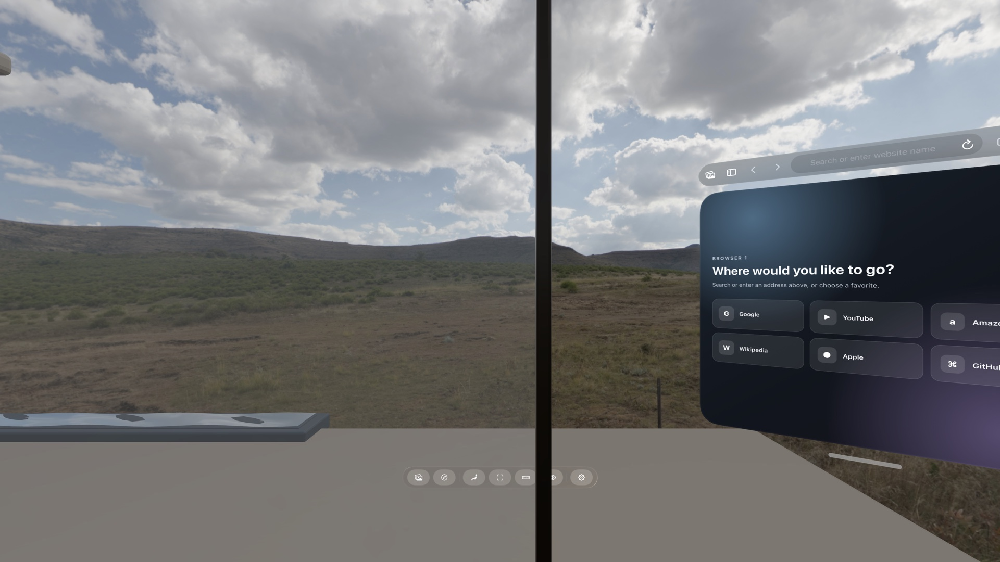
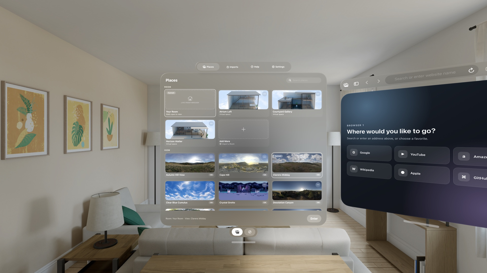

Virtual Space
Work inside a 3D Room while keeping your real desk.
Choose the 360° View outside the Room's windows, then line up its desk with yours.
Combine a 360° View with a 3D Room, keep your real desk within reach, and arrange the web pages you need around you.
Availability: Locus is not yet available to download. Its core features will be free to use, with optional in-app purchases.

Places
Mix the scenery and space you want, then enter Virtual Space or open a Room Portal.

Virtual Space
Choose the 360° View outside the Room's windows, then line up its desk with yours.
Room Portal
Stay aware of the room around you while one wall opens onto a 360° View.
Spatial browser
Open multiple browser windows and keep related pages together in tabs.
Create your own Place
Import a complete 360° image as a View. If you build 3D spaces, the authoring guide shows you how to turn one into a Room for Locus.
Create a Place